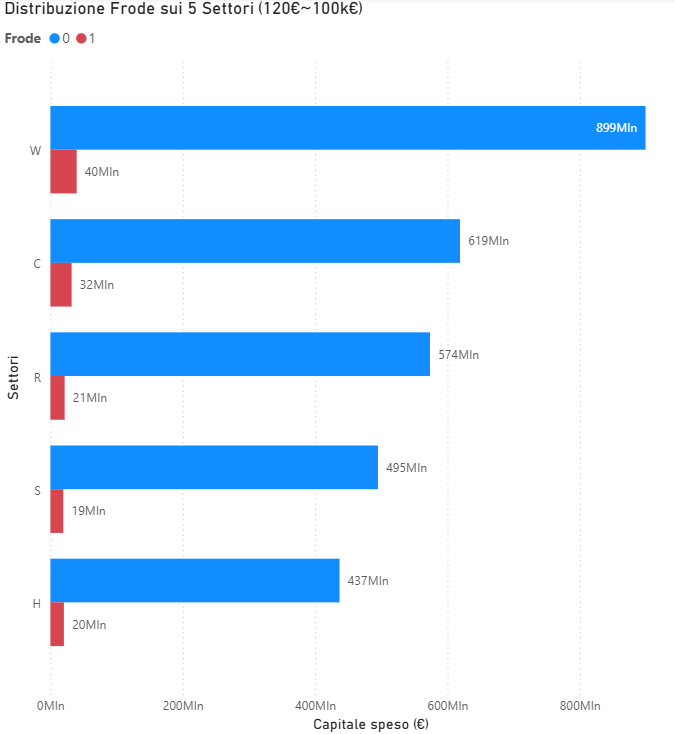
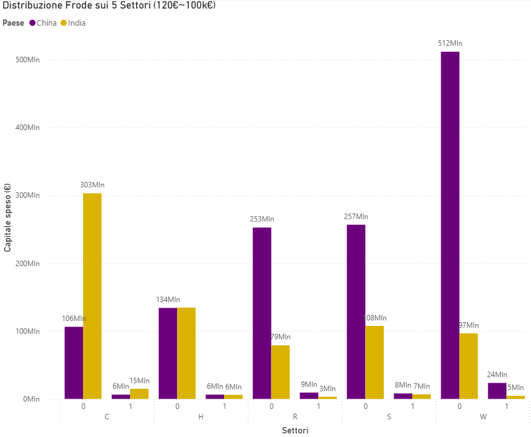
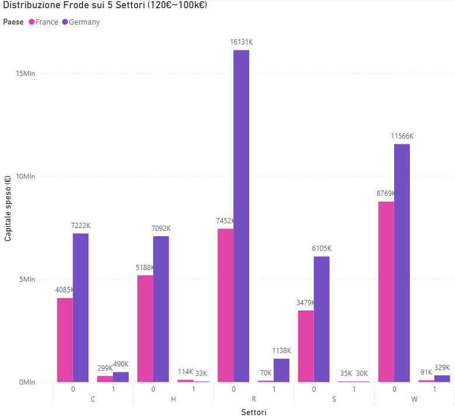
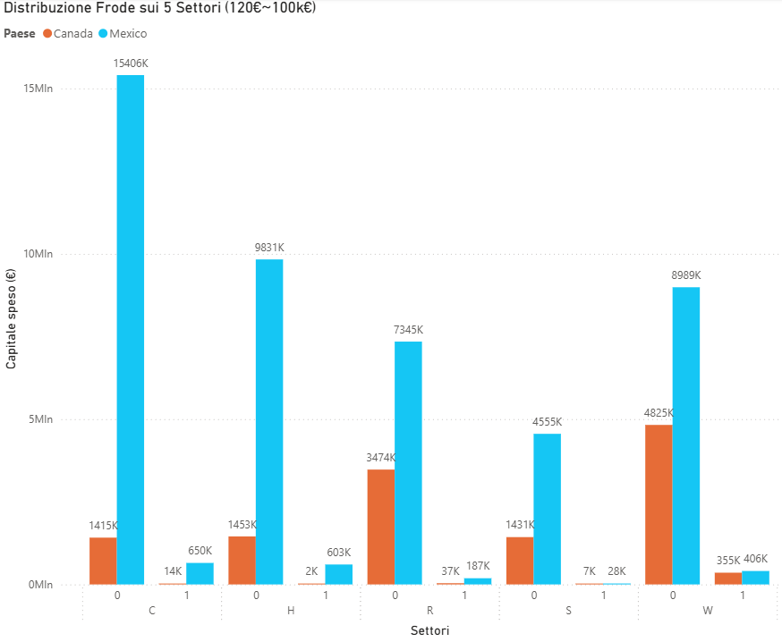
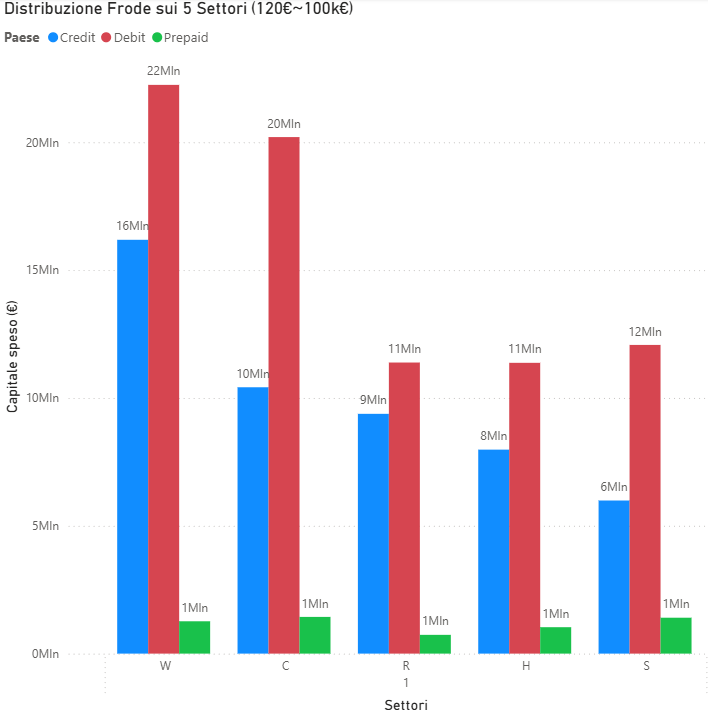
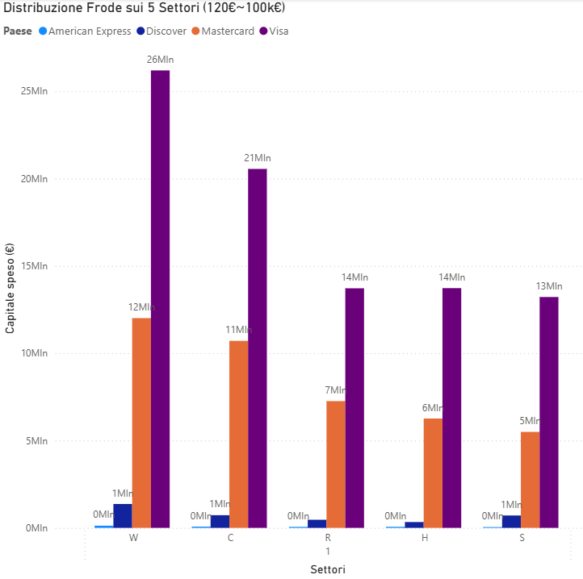
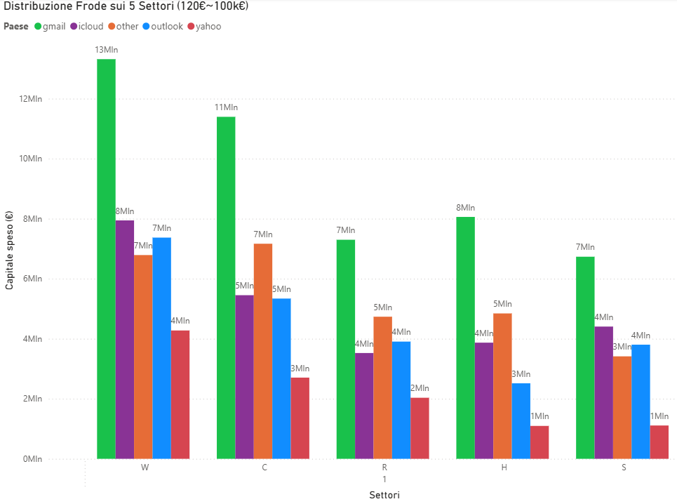

WORK IN PROGRESS!

Questa pagina è ancora in fase di sviluppo.
Se dovessi avere qualche perplessità, non esitare a contattarci!
Power BI: Analisi Predittiva delle Frodi
In questa sezione, dal punto di vista progettuale, sarà presente la dashboard strategica sviluppata per ARDEO S.H. - FTRS, progettata per identificare e analizzare pattern di frode attraverso:
- Mappe geografiche interattive per visualizzare hotspot frodi
- Trend temporali avanzati (giornaliero/settimanale)
- Correlazioni chiave tra profilo utente, importo transazione e metodo di pagamento
- Filtri dinamici per simulazioni scenario-based
Il caso di studio si basa sull'integrazione tra il dataset IEEE-CIS Fraud Detection e dati utente sintetici, con aggiornamento automatico via pipeline Azure.
Ci tengo ad esplicitare che con i mezzi attualmente a mia disposizione posso utilizzare solo i tools presenti nel pacchetto Power BI Desktop, quindi non posso utilizzare le funzionalità avanzate.
Analisi delle Frodi su 5 Settori
Questo grafico rappresenta un esempio di visualizzazione ottenibile in Power BI Desktop analizzando i dati CSV processati dalla pipeline ETL.
- Asse X: Vendite nel settore
- Asse Y: H (Healthcare) | S (Financial Services) | W (E-Commerce) | R (Real Estate) | C (Insurance)
- Filtri applicati: Transazioni superiori a 120€ e inferiori a 100'000€


Analisi Frodi tra Cina e India
-
Cina:
-
E-commerce (W: 43%): Leader globale grazie a piattaforme come Alibaba e JD.com.
Frodi principali: Falsi reclami per rimborsi, prodotti contraffatti, e account hacking.
Motivo: Alto volume di transazioni digitali e scarsa verifica degli utenti. -
Servizi finanziari (S: 16%): Crescita esponenziale dei pagamenti digitali (WeChat Pay, Alipay).
Frodi principali: Phishing, frodi su investimenti online, e money laundering.
Motivo: Digitalizzazione rapida con controlli insufficienti. -
Real estate (R: 21%): Mercato volatile con bolle speculative.
Frodi principali: Frodi ipotecarie, falsi investimenti, e riciclaggio.
Motivo: Regolamentazione debole in alcune province.
-
E-commerce (W: 43%): Leader globale grazie a piattaforme come Alibaba e JD.com.
-
India:
-
Assicurazioni (C: 41%): Settore ad altissimo rischio di frode.
Frodi principali: Sinistri auto falsi, polizze vita truffaldine, e collusioni con medici.
Motivo: Bassa literacy finanziaria e corruzione diffusa. -
E-commerce (W: 14%): In crescita ma ancora limitato.
Frodi principali: Truffe COD (Cash on Delivery), falsi marketplace.
Motivo: Infrastrutture digitali fragili e bassa fiducia nei pagamenti online. -
Sanità (H: 19%): Sistema frammentato e vulnerabile.
Frodi principali: Fatture fantasma, furto di farmaci sussidiati.
Motivo: Corruzione nel sistema sanitario pubblico.
-
Assicurazioni (C: 41%): Settore ad altissimo rischio di frode.
Analisi Frodi tra Germania e Francia
-
Germania:
-
Real estate (R: 33%): Settore immobiliare ad alto rischio frodi
Frodi tipiche: Riciclaggio tramite acquisti immobiliari, falsi investimenti, frodi ipotecarie
Motivo dominante: Mercato immobiliare stabile e liquido, attraente per capitali illeciti -
E-commerce (W: 24%): Secondo settore per incidenza fraudolenta
Frodi tipiche: Chargeback fraud, resi falsi, prodotti contraffatti
Motivo dominante: Alto volume transazioni digitali (oltre 80% popolazione acquista online) -
Assicurazioni (C: 16%): Vulnerabilità specifiche
Frodi tipiche: Sinistri auto inventati, danni property fraudolenti
Motivo dominante: Sistema assicurativo complesso con margini per manipolazioni
-
Real estate (R: 33%): Settore immobiliare ad alto rischio frodi
-
Francia:
-
E-commerce (W: 29%): Settore più colpito in assoluto
Frodi tipiche: Account takeover, phishing, frodi su marketplace
Motivo dominante: Cultura digitale spinta (90% utenti Internet shop online) -
Real estate (R: 24%): Secondo per incidenza frodi
Frodi tipiche: Affitti brevi fraudolenti, frodi su piattaforme immobiliari online
Motivo dominante: Boom del mercato locazioni turistiche e transazioni veloci -
Assicurazioni (C: 16%): Terzo settore critico
Frodi tipiche: Frodi malattia, sinistri auto gonfiati
Motivo dominante: Elevata copertura assicurativa (85% popolazione) con possibili abusi
-
E-commerce (W: 29%): Settore più colpito in assoluto


Analisi Frodi tra Canada e Messico
-
Canada:
-
E-commerce (W: 39%): Settore dominante con altissima penetrazione digitale
Frodi principali: Chargeback fraud, resi abusivi, account takeover
Motivo chiave: Oltre l'85% della popolazione effettua acquisti online regolarmente -
Real estate (R: 31%): Secondo settore per incidenza frodi
Frodi principali: Frodi ipotecarie, falsi investimenti, riciclaggio
Motivo chiave: Mercato iperattivo con prezzi fuori controllo a Toronto/Vancouver -
Assicurazioni (C: 9%): Terzo settore critico
Frodi principali: Sinistri auto fraudolenti, danni property inventati
Motivo chiave: Sistema avanzato ma con margini per frodi opportunistiche
-
E-commerce (W: 39%): Settore dominante con altissima penetrazione digitale
-
Messico:
-
Assicurazioni (C: 34%): Settore più vulnerabile
Frodi principali: Polizze auto fraudolente, danni property inventati
Motivo chiave: Scarsa regolamentazione + alti tassi criminalità (30% sinistri auto sono falsi) -
E-commerce (W: 19%): In crescita ma con limiti
Frodi principali: Truffe COD, falsi marketplace, pagamenti non tracciati
Motivo chiave: Solo il 45% della popolazione usa pagamenti digitali con sicurezza -
Sanità (H: 19%): Terzo settore problematico
Frodi principali: Fatture fantasma, furto farmaci sussidiati
Motivo chiave: Sistema frammentato pubblico-privato con controlli carenti
-
Assicurazioni (C: 34%): Settore più vulnerabile
Analisi Frodi in base al tipo di carte
Un indicatore interessante è notare che coloro che hanno commesso frodi hanno utilizzato maggiormente una carta di debito.
All'interno di un processo di Machine Learning questa potrebbe essere una feature importante.


Analisi Frodi in base al brand delle carte
Un indicatore interessante è notare che American Express risulti il brand più sicuro dei quattro. Viceversa Visa e Mastercard sembrano essere le più colpite.
È importante però notare che il numero di transazioni effettutate con i due marchi summenzionati sono molto maggiori rispetto a quelle effettuate dagli altri due brand presi in esame. All'interno di un processo di Machine Learning questa potrebbe essere un'altra feature importante.
Analisi Frodi in base all'email
Un indicatore interessante è notare che coloro che hanno commesso frodi hanno utilizzato maggiormente un provider gmail, eppure è importante notificare che i dati sono maggiori sempre in funzione della popolarità del provider.
All'interno di un processo di Machine Learning anche questa potrebbe essere una feature importante.

Puoi scaricare il file completo in PowerBI cliccando sul pulsante Download